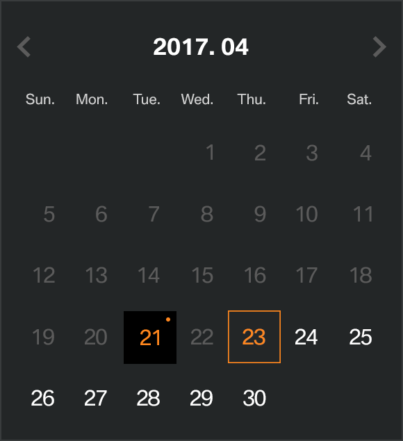

BMW Plus 구축 프로젝트 Mobile List
Mobile Guide
Mobile List
PC List
Admin List
HTML Guide
기본규칙
Layout
Button
Paragraph
Step, Tab
Table
Form
Popup
Board
Etc
Popup
새창 Popup
System Popup
Layer Popup1
자동로그인
Layer Popup2 - full size popup
날짜 선택
확인
자동로그인을 사용하시면, 로그아웃을 하실때까지 로그인이 유지됩니다.
개인정보가 유출될 수 있으니 공공장소에서는 사용을 자제하여 주십시오.
닫기
예약일 선택

09:00
09:20
09:40
10:00
10:20
10:40
11:00
11:20
11:40
13:00
13:20
13:40
14:00
14:20
14:40
15:00
15:20
15:40
16:00
16:20
16:40
확인
닫기